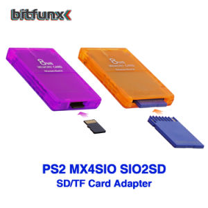
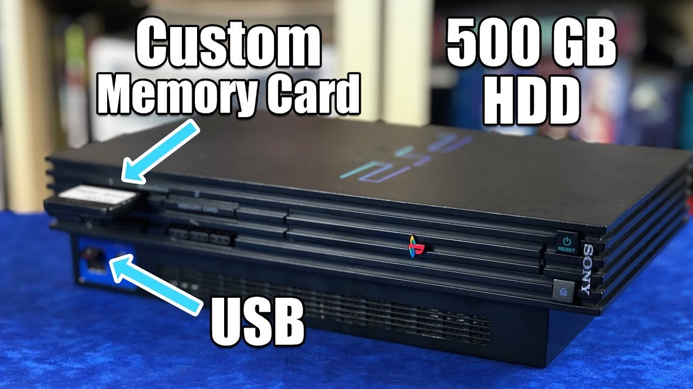

What is MX4SIO?
This is a PlayStation 2 adapter that allows you to connect SD cards to the memory card slot. SIO is the name of the PlayStation interface chip. On PlayStation 2 it is called "SIO2". The SD card does NOT replace a memory card! Since it is only an adapter and not a converter and SD cards and memory cards work in a similar, but not the same way, the SD card is not recognised by the consol

How does it work?
The PlayStation Memory Card interface (2) is a serial interface similar to SPI. SD cards can be accessed via SPI, although this is not usually the case. Therefore, the PS2 hardware is largely compatible with SD cards. However, there are serious differences at the software level (MagicGate, memory structure), so only special software can access SD cards. The software addresses the SD card via the "Block Device Manager" (BDM).
Why use SD cards via this adapter and not via USB?
the PlayStation 2's memory card port is faster. The PS2 only has USB 1.1, which means that the maximum theoretical data rate is 12 Mbps (1.5 MB/s). The transfer rate on the memory card port, on the other hand, is 24 Mbps.
